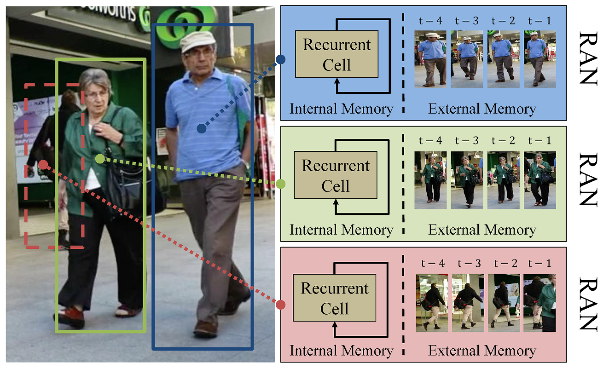
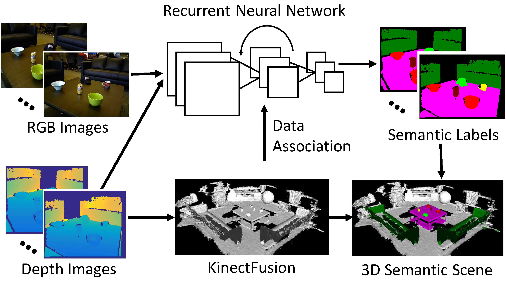
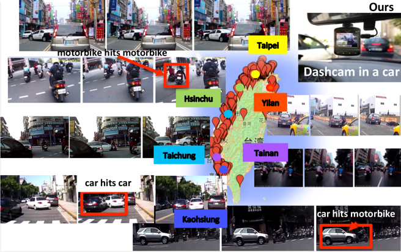
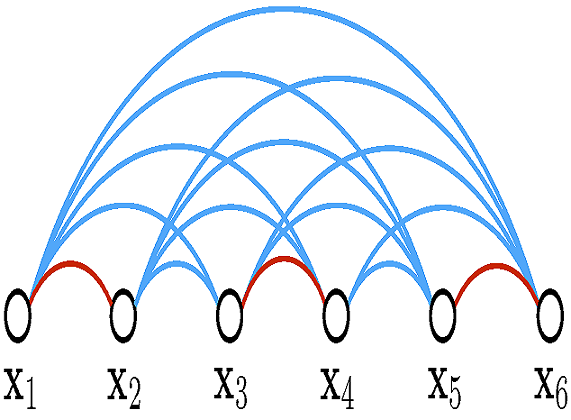
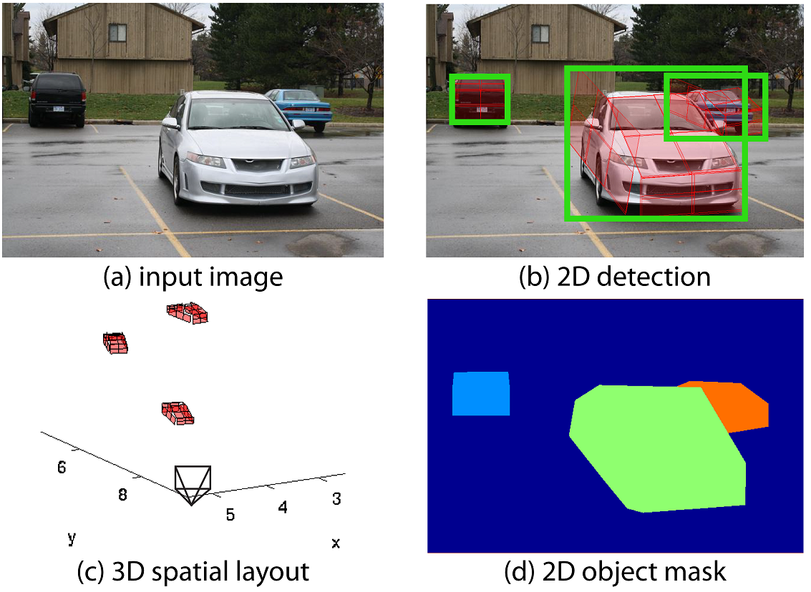
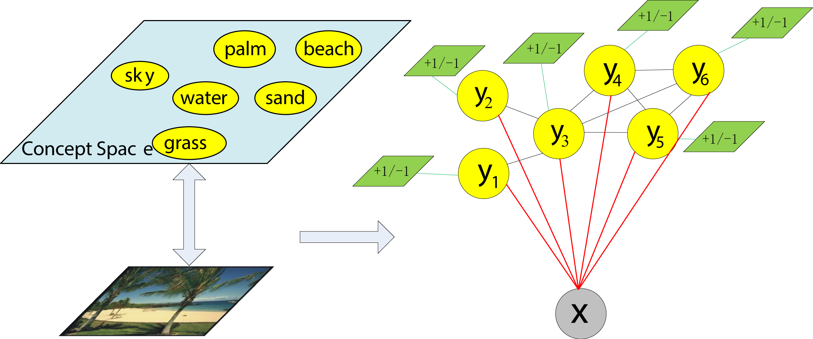
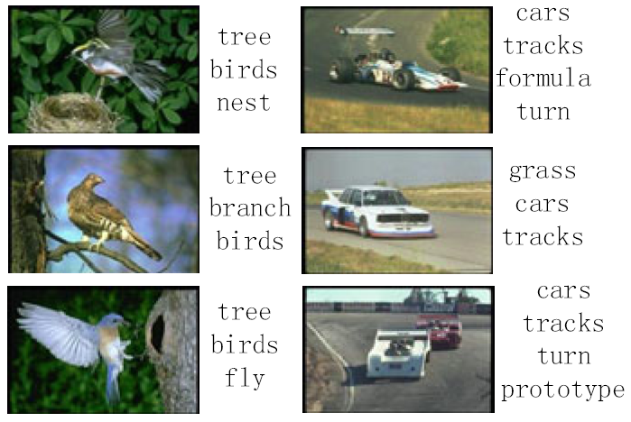

Yu Xiang's homepage
Biography
Yu Xiang is a postdoctoral researcher with Prof. Dieter Fox in Computer Science & Engineering at the University of Washington. He received his Ph.D. in electrical engineering from the University of Michigan at Ann Arbor in 2016 advised by Prof. Silvio Savarese. He was a visiting researcher in the artificial intelligence lab at Stanford University from 2013 to 2016. He received M.S. degree in computer science from Fudan University in 2010 advised by Prof. Xiangdong Zhou, and B.S. degree in computer science from Fudan University in 2007. (CV)
Research Interests
My research interests primarily focus on perception for robotics. I am interested in studying how can an intelligent system or a robot understand its 3D environment from sensing, which is a very challenging and unsolved problem. Perception serves as an interface between an intelligent system and the 3D world, which provides useful information for planning and control of the system in conducting different tasks. I am interested in integrating perception, planning and control in a systematic way and deploying robots in the real world which are capable of accomplishing tasks for human. I apply machine learning, especially deep learning, to tackle the challenges in robot perception. I explore how to introduce domain knowledge such as geometric constraints into a deep neural network architecture to learn a useful representation of the 3D environment for perception. I am also interested in how to learn a joint representation for perception, planning and control with deep neural networks.
News
- 4/30/2017 Our work on DA-RNN is accepted to RSS 2017!
- 12/20/2016 Our work on SubCNN is accepted to WACV 2017!
- 10/28/2016 We organized the 3D Object Geometry from Single Image tutorial at 3DV 2016.
- 7/19/2016 Two papers related to 3D object recognition are accepted to ECCV 2016!
- 6/10/2016 I am joining Prof. Dieter Fox's group as a postdoc in August!
- 3/6/2016 Our work on deep metric learning is accepted to CVPR 2016!
- 2/1/2016 I started as a Postdoctoral Researcher at Stanford University.
- 12/4/2015 I successfully defended my doctoral thesis!
- 9/4/2015 Call for papers: 5th Workshop on 3D Representation and Recognition (3dRR-15) in ICCV 2015
- 8/29/2015 Our work on multi-object tracking with MDP is accepted to ICCV 2015 as oral presentation!
- 6/22/2015 I started a 3-month internship at NEC Labs America in Cupertino.
- 3/8/2015 Two papers accepted in CVPR 2015! 3DVP is accepted as oral presentation!
- 1/23/2015 Finish my thesis proposal: 3D Object Representations for Recognition.
- 6/15/2014 Our work on multiview object tracking is accepted to ECCV 2014!
- 5/18/2014 PASCAL3D+ version 1.1 is available now! Check it out to see how it can benefit your research!
- 5/5/2014 I started a 3-month internship at NEC Labs America in Cupertino.
- 2/15/2014 Our PASCAL3D+ benchmark (version 1.0) is released!
- 1/30/2014 Our work on building a large scale dataset for 3D object detection and pose estimation is accepted to WACV 2014!
- 10/5/2013 Our paper is accepted to the 3dRR workshop in conjunction with ICCV 2013.
- 9/1/2013 I moved to Stanford as a visiting student.
- Our paper has been accepted to the ECCV 2012 conference.
- I received the Outstanding Master's Thesis Award of Shanghai.
- Our CVPR 2012 paper and code are available!
Publications
 | PoseCNN: A Convolutional Neural Network for 6D Object Pose Estimation in Cluttered Scenes Yu Xiang, Tanner Schmidt, Venkatraman Narayanan and Dieter Fox In arXiv, 2017. arXiv, Bibtex |
|  | Recurrent Autoregressive Networks for Online Multi-Object Tracking Kuan Fang, Yu Xiang and Silvio Savarese In arXiv, 2017. arXiv, Bibtex |
|  | DA-RNN: Semantic Mapping with Data Associated Recurrent Neural Networks Yu Xiang and Dieter Fox In Robotics: Science and Systems (RSS), 2017. arXiv, PDF, Bibtex, Poster, Slides, Code, Project |
 | Subcategory-aware Convolutional Neural Networks for Object Proposals and Detection Yu Xiang, Wongun Choi, Yuanqing Lin and Silvio Savarese In IEEE Winter Conference on Applications of Computer Vision (WACV), 2017. arXiv, PDF, Bibtex, Technical_Report, Poster, Slides, KITTI_Results |
{kind=link}
{kind=link}
|  | Anticipating Accidents in Dashcam Videos Fu-Hsiang Chan, Yu-Ting Chen, Yu Xiang and Min Sun In Asian Conference on Computer Vision (ACCV), 2016. PDF, Bibtex, Project (Oral) |
 | ObjectNet3D: A Large Scale Database for 3D Object Recognition Yu Xiang, Wonhui Kim, Wei Chen, Jingwei Ji, Christopher Choy, Hao Su, Roozbeh Mottaghi, Leonidas Guibas and Silvio Savarese In European Conference on Computer Vision (ECCV), pp. 160-176, 2016. PDF, Bibtex, Technical_Report, Poster, Slides, ObjectNet3D (Spotlight Oral) |
 | Pose Estimation Errors, the Ultimate Diagnosis Carolina Redondo-Cabrera, Roberto López-Sastre, Yu Xiang, Tinne Tuytelaars and Silvio Savarese In European Conference on Computer Vision (ECCV), pp. 118-134, 2016. PDF, Bibtex, Code |
|  | Deep Metric Learning via Lifted Structured Feature Embedding Hyun Oh Song, Yu Xiang, Stefanie Jegelka and Silvio Savarese In IEEE Conference on Computer Vision and Pattern Recognition (CVPR), pp. 4004-4012, 2016. arXiv, PDF, Bibtex, Technical_Report, Code, Project (Spotlight Oral) |
{kind=link}
{kind=link}
 | Learning to Track: Online Multi-Object Tracking by Decision Making Yu Xiang, Alexandre Alahi and Silvio Savarese In International Conference on Computer Vision (ICCV), pp. 4705-4713, 2015. PDF, Bibtex, Technical_Report, Poster, Slides, MOT_Results, KITTI_Results, Code, Project (Oral) |
 | Data-Driven 3D Voxel Patterns for Object Category Recognition Yu Xiang, Wongun Choi, Yuanqing Lin and Silvio Savarese In IEEE Conference on Computer Vision and Pattern Recognition (CVPR), pp. 1903-1911, 2015. PDF, Bibtex, Technical_Report, Poster, Slides, KITTI_Results, Code, Project (Oral) |
 | A Coarse-to-Fine Model for 3D Pose Estimation and Sub-category Recognition Roozbeh Mottaghi, Yu Xiang and Silvio Savarese In IEEE Conference on Computer Vision and Pattern Recognition (CVPR), pp. 418-426, 2015. PDF, Bibtex, Technical_Report, Poster, Project |
| | Monocular Multiview Object Tracking with 3D Aspect Parts Yu Xiang*, Changkyu Song*, Roozbeh Mottaghi and Silvio Savarese (*equal contribution) In European Conference on Computer Vision (ECCV), pp. 220-235, 2014. PDF, Bibtex, Technical_Report, Poster, Slides, Code, Project |
 | Beyond PASCAL: A Benchmark for 3D Object Detection in the Wild Yu Xiang, Roozbeh Mottaghi and Silvio Savarese In IEEE Winter Conference on Applications of Computer Vision (WACV), pp. 75-82, 2014. PDF, Bibtex, Poster, Slides, PASCAL3D+ |
|  | Object Detection by 3D Aspectlets and Occlusion Reasoning Yu Xiang and Silvio Savarese In the 4th International IEEE Workshop on 3D Representation and Recognition in ICCV (3dRR), pp. 530-537, 2013. PDF, Bibtex, Technical_Report, Slides, Code, Project |
{kind=link}
 | Object Co-detection Sid Yingze Bao, Yu Xiang and Silvio Savarese In European Conference on Computer Vision (ECCV), vol. 7572, pp. 86-101, 2012. PDF, Bibtex, Poster, Slides, Project |
 | Estimating the Aspect Layout of Object Categories Yu Xiang and Silvio Savarese In IEEE Conference on Computer Vision and Pattern Recognition (CVPR), pp. 3410-3417, 2012. PDF, Bibtex, Technical Report, Poster, Slides, Code, Project |
|  | Semantic Context Modeling with Maximal Margin Conditional Random Fields for Automatic Image Annotation Yu Xiang, Xiangdong Zhou, Zuotao Liu, Tat-Seng Chua and Chong-Wah Ngo In IEEE Conference on Computer Vision and Pattern Recognition (CVPR), pp. 3368-3375, 2010. PDF, Bibtex, Technical Report |
|  | Learning Contextual Metrics for Automatic Image Annotation Zuotao Liu, Xiangdong Zhou, Yu Xiang and Yan-Tao Zheng In Advances in Multimedia Information Processing - PCM, vol. 6297, pp. 124-135, 2010. PDF, Bibtex |
{kind=link}
{kind=link}
 | A Revisit of Generative Model for Automatic Image Annotation using Markov Random Fields Yu Xiang, Xiangdong Zhou, Tat-Seng Chua and Chong-Wah Ngo In IEEE Conference on Computer Vision and Pattern Recognition (CVPR), pp. 1153-1160, 2009. PDF, Bibtex |
 | Adaptive Model for Web Image Semantic Automatic Image Annotation Hongtao Xu, Xiangdong Zhou, Yu Xiang and Baile Shi In Journal of Software (in Chinese), vol. 21, no. 9, pp. 2183-2195, 2009. PDF, Bibtex |
 | Exploiting Flickr's Related Tags for Semantic Annotation of Web Images Hongtao Xu, Xiangdong Zhou, Mei Wang, Yu Xiang and Baile Shi In Proceedings of the ACM International Conference on Image and Video Retrieval (CIVR), no. 46, 2009. PDF, Bibtex |
 | Automatic Web Image Annotation via Web-Scale Image Semantic Space Learning Hongtao Xu, Xiangdong Zhou, Lan Lin, Yu Xiang and Baile Shi In Advances in Data and Web Management, vol. 5446, pp. 211-222, 2009. PDF, Bibtex |
PhD Thesis
- 3D Object Representations for Recognition (PDF)
University of Michigan, PhD thesis, 2016.
Master Thesis
- Graphical Models for Semantic Context Modeling in Automatic Image Annotation (PDF)
Fudan University, Master thesis (in Chinese), Outstanding Master's Thesis Award of Shanghai, 2010.
Talks
- Perceiving the 3D World from Images and Videos (PDF)
Nvidia Research, Redmond, Washington, 11/07/2017. - 3D Object Recognition and Scene Understanding from RGB-D Videos (PDF)
GRASP Lab at Penn, 10/11/2017; Microsoft Research, 10/17/2017; Vision Lab at Stanford, 10/23/2017. - 3D Object Recognition and Scene Understanding (PDF)
In Mitsubishi Electric Research Laboratories, Boston, Massachusetts, 7/14/2017. - DA-RNN: Semantic Mapping with Data Associated Recurrent Neural Networks (PDF)
In Robotics: Science and Systems (RSS), MIT, Massachusetts, 7/13/2017. - Subcategory-aware Convolutional Neural Networks for Object Proposals and Detection (PDF)
In IEEE Winter Conference on Applications of Computer Vision, Santa Rosa, California, 3/29/2017. - 3D Object Recognition (PDF)
In the International Conference on 3D Vision, Stanford University, 10/28/2016. - 3D Object Representations for Recognition (PDF)
VASC Seminar, CMU, 3/28/2016; University of Toronto, 4/4/2016; MIT, 4/12/2016; UC Berkeley, 4/21/2016; UIUC, 5/5/2016; University of Washington, 5/31/2016. - 3D Object Detection and Pose Estimation (PDF)
In the 1st International Workshop on Recovering 6D Object Pose in conjunction with ICCV, Santiago, Chile, 12/17/2015. - Learning to Track: Online Multi-Object Tracking by Decision Making (PDF)
In International Conference on Computer Vision, Santiago, Chile, 12/16/2015. - Data-Driven 3D Voxel Patterns for Object Category Recognition (PDF)
In IEEE Conference on Computer Vision and Pattern Recognition, Boston, Massachusetts, 06/08/2015. - Monocular Multiview Object Tracking with 3D Aspect Parts (PDF)
In the 1st Stanford-SNU Workshop on Automated Driving, Stanford University, 02/24/2015. - Beyond PASCAL: A Benchmark for 3D Object Detection in the Wild (PDF)
In IEEE Winter Conference on Applications of Computer Vision, Steamboat Springs, Colorado, 03/24/2014. - Object Detection by 3D Aspectlets and Occlusion Reasoning (PDF)
In the 4th International IEEE Workshop on 3D Representation and Recognition in conjunction with ICCV, Sydney, Australia, 12/08/2013. - Estimating the Aspect Layout of Object Categories (PDF)
In Midwest Vision Workshop, University of Illinois at Urbana-Champaign, 09/21/2012.